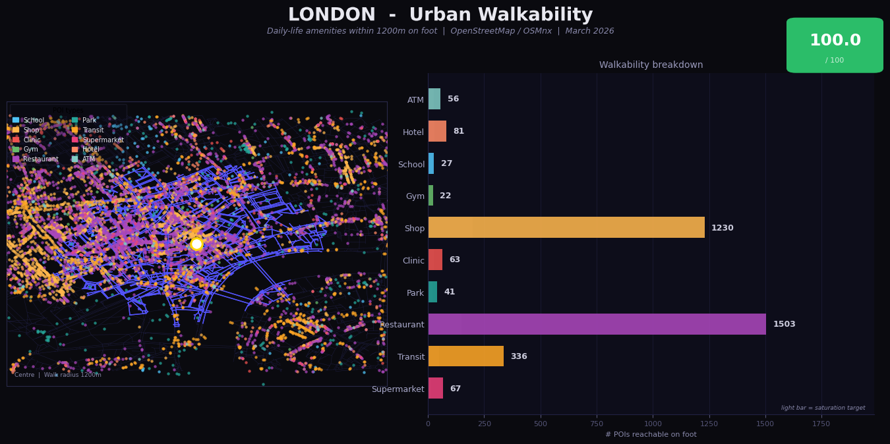
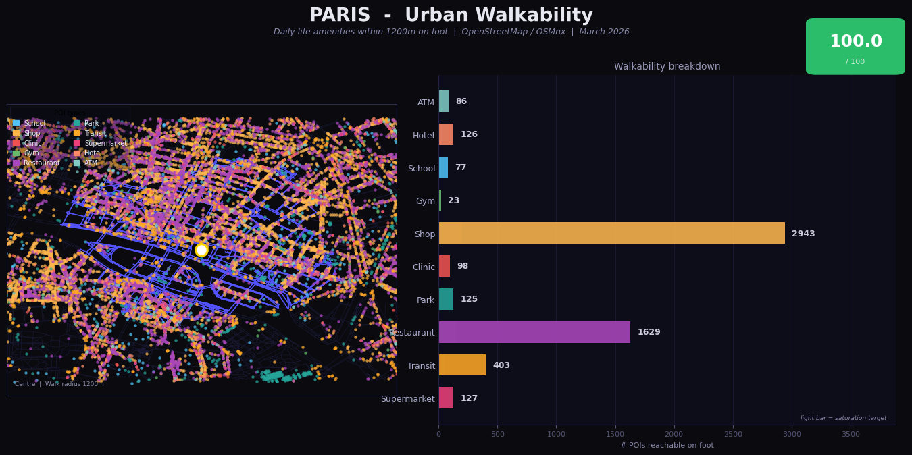
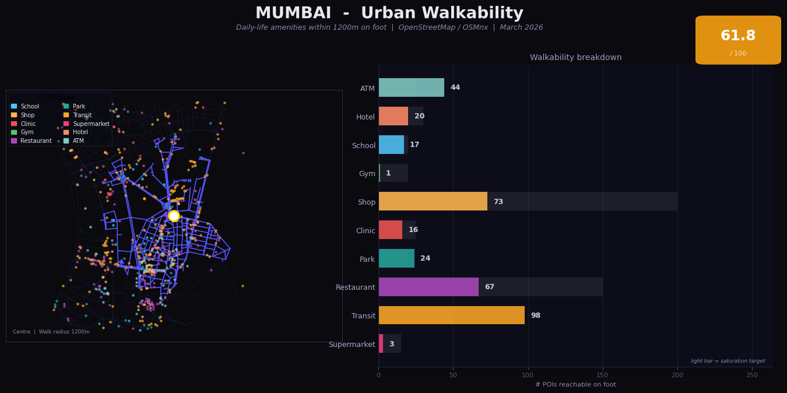
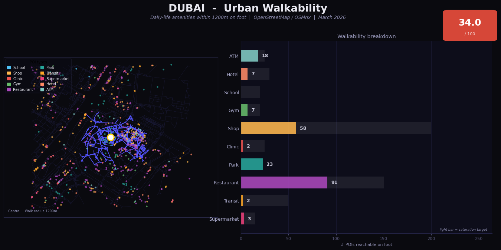

Mumbai vs London, Paris & Dubai — measuring daily-life accessibility on foot using OpenStreetMap
How walkable is Mumbai compared to some of the world’s most iconic cities? This project downloads real OpenStreetMap street networks and Points of Interest for Mumbai, London, Paris and Dubai, then uses graph-distance isochrone analysis to count how many daily-life amenities — shops, restaurants, clinics, transit stops, parks — are reachable within a 1200 m walk (~15 minutes) from each city centre. A weighted composite score (0–100) ranks each city. The methodology works for any city on Earth.
Blue network = streets reachable within 1200 m (isochrone). Coloured dots = POIs by category. White dot = measurement centre. Click any map to view full size.

London 100.0 / 100

Paris 100.0 / 100

Mumbai 61.8 / 100

Dubai 34.0 / 100
| City | Score | Bar | Shop | Restaurant | Transit | Supermarket | Clinic | Park | ATM |
|---|---|---|---|---|---|---|---|---|---|
| London | 100.0 | 1230 | 1503 | 336 | 67 | 63 | 41 | 56 | |
| Paris | 100.0 | 2943 | 1629 | 403 | 127 | 98 | 125 | 86 | |
| Mumbai | 61.8 | 73 | 67 | 98 | 3 | 16 | 24 | 44 | |
| Dubai | 34.0 | 58 | 91 | 2 | 3 | 2 | 23 | 18 |
Covent Garden sits at the heart of one of the world’s most walkable urban grids. 336 transit stops, 1230 shops and 63 clinics within 1200 m saturate every scoring category. London Zone 1’s dense, mixed-use street grid represents the gold standard of urban walkability.
Le Marais has the highest raw POI counts of all four cities — 2943 shops and 1629 restaurants. Baron Haussmann’s 19th-century redesign created wide, mixed-use boulevards where every daily need is within walking distance. 403 transit stops add exceptional connectivity.
Fort area is genuinely walkable — 98 transit stops and 73 shops reflect real urban density. Mumbai’s score likely understates reality due to incomplete OSM mapping of restaurants and supermarkets. Improved data coverage would push Mumbai significantly higher in the ranking.
Downtown Dubai was master-planned around the automobile. Just 2 transit stops and 2 clinics within 1200 m reveals a fundamental design incompatibility with walkability. The 91 restaurants reflect tourist infrastructure, but daily life structurally requires a car or taxi.
Core isochrone + POI scoring logic used in this analysis:
# Cities: add any lat/lon pair to analyse a new city CITIES = { "Mumbai": {"center": (18.9388, 72.8354)}, "London": {"center": (51.5117, -0.1240)}, "Dubai": {"center": (25.1972, 55.2744)}, "Paris": {"center": (48.8566, 2.3522)}, } # Step 3: isochrone — nodes reachable within 1200m on foot def isochrone_nodes(G, lat, lon, dist=1200): origin = ox.nearest_nodes(G, lon, lat) lengths = nx.single_source_dijkstra_path_length( G, origin, cutoff=dist, weight="length" ) return set(lengths.keys()) # Count POIs whose centroid falls inside the reachable convex hull def count_pois(G, reachable, poi_dict): pts = [Point(G.nodes[n]["x"], G.nodes[n]["y"]) for n in reachable] hull = gpd.GeoSeries(pts, crs="EPSG:4326").unary_union.convex_hull return {cat: int(gdf.geometry.within(hull).sum()) for cat, gdf in poi_dict.items()} # Weighted score 0-100 with per-category saturation def walkability_score(counts): tw = sum(WEIGHTS.values()) s = sum(min(1.0, counts.get(c, 0) / SATURATION[c]) * w for c, w in WEIGHTS.items()) return round(s / tw * 100, 1)
{kind=link}
{kind=link}
{kind=link}
{kind=link}